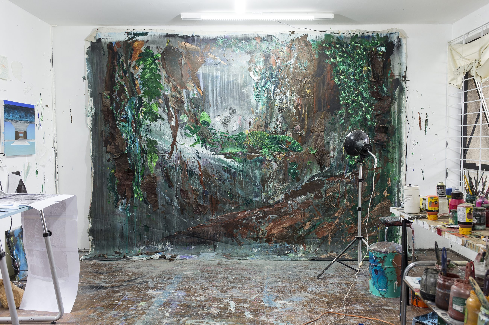

and the path
of the heart.
My research is driven by the curiosity to interpret life and by the alchemy present in the making of painting.
I am interested in a world revealed through two complementary paths: the path of the eye and the path of the heart.
Water is a central element within this investigation. Across oceans, ecosystems and different states of matter, it becomes a symptom of the presence of visible and invisible forces that sustain life.
The process is at the center of my practice. It is a self-provoked path of errors and discoveries, in which layers of paint continuously die and are reborn.
The work begins before the image.
Painting develops through an ongoing encounter with matter. The process is not simply a means toward an image, but a field of investigation in itself.
Materials are tested, combined, transformed and sometimes allowed to resist intention. Layers accumulate, disappear and return, creating a continuous movement between emergence and disappearance.
Willian Santos
Born in Curitiba in 1985, Willian Santos lives and works in Florianópolis, Brazil.
He holds a Bachelor’s degree in Visual Arts from Universidade Tuiuti do Paraná, completed in 2009, and has developed his artistic practice for more than nineteen years.
His practice encompasses painting, encaustic and mixed media, investigating relationships between water, matter, ecosystems, environment and perception.
Water has been a central element of his research since its beginning, expanding into broader investigations of material transformation, visible and invisible forces, and the conditions through which images emerge.